9
817 fiches en français pour le niveau 9, prêtes à imprimer et avec corrigé.
817 ressources
Thème

Démocratie chrétienne – Texte à trous, compréhension orale et mots mêlés

Démocratie – Compréhension de lecture : texte à trous, écoute et mots mêlés

Droits de l'homme – Texte à trous, compréhension orale et mots mêlés

Droits de l'enfant – Texte à trous, compréhension orale et mots mêlés

Droit d'auteur dans les pays de common law – Fiche de lecture en français
Douleur – Compréhension de lecture : texte à trous, écoute et mots mêlés
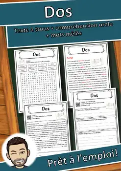
Dos – Compréhension de lecture : texte à trous, écoute et mots mêlés
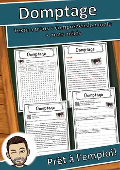
Domptage – Compréhension de lecture : texte à trous, écoute et mots mêlés
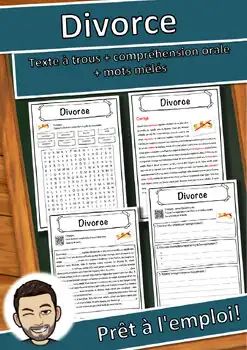
Divorce – Compréhension de lecture : texte à trous, écoute et mots mêlés
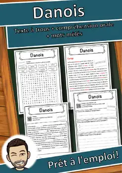
Danois – Compréhension de lecture : texte à trous, écoute et mots mêlés
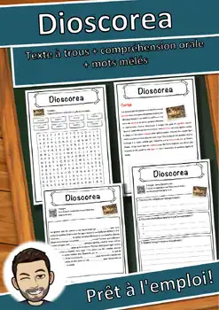
Dioscorea – Compréhension de lecture : texte à trous, écoute et mots mêlés
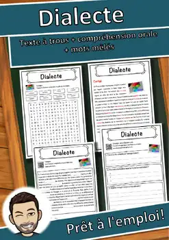
Dialecte – Compréhension de lecture : texte à trous, écoute et mots mêlés
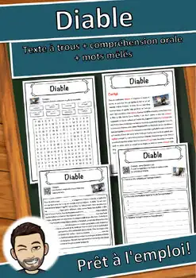
Diable – Compréhension de lecture : texte à trous, écoute et mots mêlés
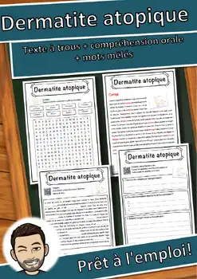
Dermatite atopique – Texte à trous, compréhension orale et mots mêlés
Delta – Compréhension de lecture : texte à trous, écoute et mots mêlés
David – Compréhension de lecture : texte à trous, écoute et mots mêlés
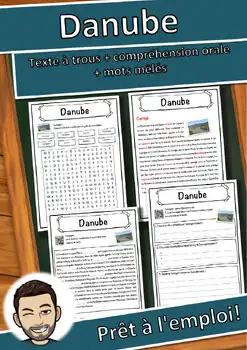
Danube – Compréhension de lecture : texte à trous, écoute et mots mêlés
Côte d'Ivoire – Compréhension de lecture : texte à trous, écoute et mots mêlés
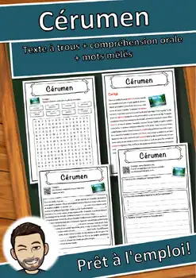
Cérumen – Compréhension de lecture : texte à trous, écoute et mots mêlés
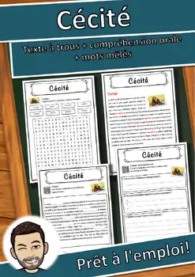
Cécité – Compréhension de lecture : texte à trous, écoute et mots mêlés

Cycle de l'eau – Compréhension de lecture : texte à trous, écoute et mots mêlés
Couvre-feu – Compréhension de lecture : texte à trous, écoute et mots mêlés
Coup de soleil – Compréhension de lecture : texte à trous, écoute et mots mêlés
Couche-culotte – Compréhension de lecture : texte à trous, écoute et mots mêlés

Corde – Compréhension de lecture : texte à trous, écoute et mots mêlés
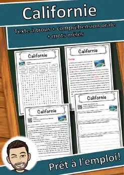
Californie – Compréhension de lecture : texte à trous, écoute et mots mêlés

Bûches – Compréhension de lecture : texte à trous, écoute et mots mêlés
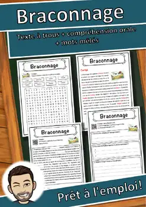
Braconnage – Compréhension de lecture : texte à trous, écoute et mots mêlés
Bore – Compréhension de lecture : texte à trous, écoute et mots mêlés
Bonheur – Compréhension de lecture : texte à trous, écoute et mots mêlés
Bob le bricoleur – Texte à trous, compréhension orale et mots mêlés
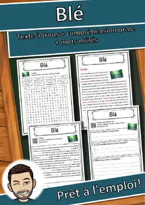
Blé – Compréhension de lecture : texte à trous, écoute et mots mêlés

Bataille – Compréhension de lecture : texte à trous, écoute et mots mêlés
Baryum – Compréhension de lecture : texte à trous, écoute et mots mêlés
Athéisme – Compréhension de lecture : texte à trous, écoute et mots mêlés
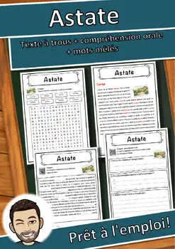
Astate – Compréhension de lecture : texte à trous, écoute et mots mêlés
Césium – Compréhension de lecture : texte à trous, écoute et mots mêlés
Céréale – Compréhension de lecture : texte à trous, écoute et mots mêlés
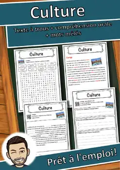
Culture – Compréhension de lecture : texte à trous, écoute et mots mêlés
Cruauté envers les animaux – Texte à trous, compréhension orale et mots mêlés
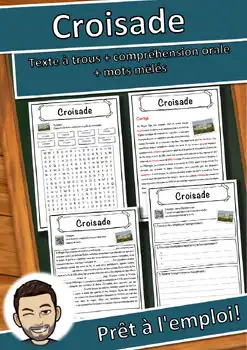
Croisade – Compréhension de lecture : texte à trous, écoute et mots mêlés
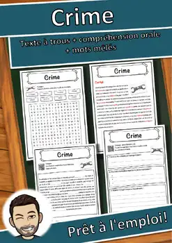
Crime – Compréhension de lecture : texte à trous, écoute et mots mêlés
Couleur – Compréhension de lecture : texte à trous, écoute et mots mêlés
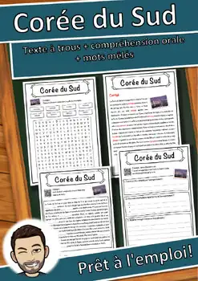
Corée du Sud – Compréhension de lecture : texte à trous, écoute et mots mêlés

Corée – Compréhension de lecture : texte à trous, écoute et mots mêlés
Corse – Compréhension de lecture : texte à trous, écoute et mots mêlés
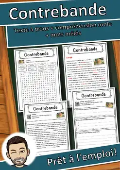
Contrebande – Compréhension de lecture : texte à trous, écoute et mots mêlés
Contrat – Compréhension de lecture : texte à trous, écoute et mots mêlés
Aucune ressource trouvée – essaie un autre mot ou un autre filtre.